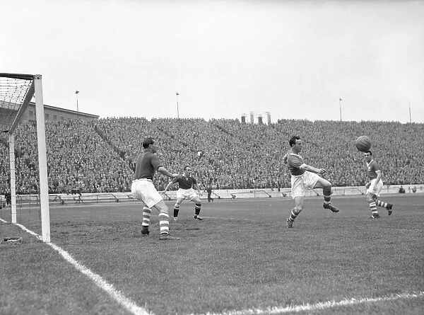
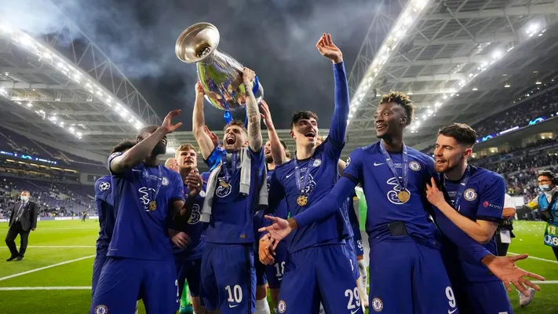
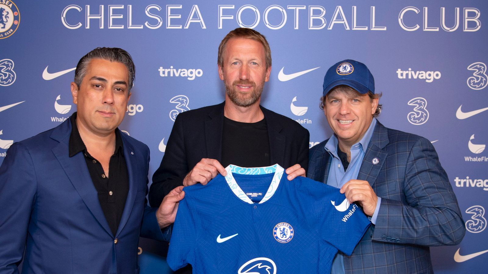

-
Beginning
Chelsea FC is one of the most successful and popular football clubs in England and the world. Founded in 1905, the club has a rich and colourful history that spans over a century and includes many memorable moments, players, managers, and trophies.
Chelsea FC was born out of the vision of Gus Mears, an English businessman who bought the Stamford Bridge athletics stadium in 1904 and wanted to transform it into a football ground. He offered the stadium to Fulham FC, but they declined his offer. Mears then decided to create his own club and named it Chelsea after the borough where the stadium was located. Chelsea was elected to the Football League shortly afterwards and began their journey in the Second Division.
Chelsea quickly gained a reputation for signing star players and attracting large crowds. The club had the highest average attendance in English football in ten separate seasons between 1907 and 19201. They also achieved their first major success in 1915, when they reached the FA Cup final for the first time, but lost to Sheffield United at Old Trafford1. They also finished third in the First Division in 1920, their best league campaign until then.
However, Chelsea failed to win any major trophies in the inter-war years. They were FA Cup semi-finalists in 1920 and 1932, but lost both times. They also struggled in the league, yo-yoing between the First and Second Divisions. They were relegated in 1924, 1928, and 1933, and promoted in 1926, 1930, and 1935. They had some notable players during this period, such as goalkeeper Harry Medhurst, winger George Mills, who was the club’s first player to score over 100 league goals, and centre-forward Hughie Gallacher, who was signed for a British record fee of £10,000 in 1930.
-

Chelsea’s fortunes improved after the Second World War, when they appointed former Arsenal player Ted Drake as their manager in 1952. Drake revolutionised the club, changing their nickname from the Pensioners to the Blues, introducing a new crest and kit, and instilling a winning mentality among the players1. He also signed some talented players, such as goalkeeper Charlie Thomson, defender John Harris, midfielder Johnny McNichol, and forwards Roy Bentley and Frank Blunstone.
Drake led Chelsea to their first major trophy in 1955, when they won the First Division title for the first time in their history. They finished four points ahead of second-placed Wolverhampton Wanderers, with Bentley scoring 21 goals to become the league’s top scorer. Chelsea also reached the semi-finals of the FA Cup that season, but lost to Newcastle United. The title win was a remarkable achievement for Chelsea, who had never finished higher than third before. It also marked the end of an era for Drake, who resigned as manager in 1961 after failing to repeat his success.
Chelsea entered a new phase under Tommy Docherty, who became manager in 1961. He brought in young players such as Terry Venables, Peter Bonetti, Bobby Tambling, Barry Bridges, and Ron Harris. He also introduced an attractive and attacking style of play that earned Chelsea many admirers. Chelsea won their first FA Cup in 1970, beating Leeds United in a replay at Old Trafford after a thrilling 2-2 draw at Wembley. They also won their first European trophy in 1971.
-

However, Chelsea faced financial difficulties in the early 1970s due to the cost of redeveloping Stamford Bridge. The club had to sell some of their best players and were relegated to the Second Division in 1975. They bounced back to the First Division in 1977 under Eddie McCreadie, but were relegated again in 1979 under Ken Shellito. They returned to the top flight in 1984 under John Neal, who signed players such as Kerry Dixon, Pat Nevin, David Speedie, Nigel Spackman and Colin Pates.
Chelsea enjoyed a period of stability and success under Bobby Campbell, who became manager in 1988. He led Chelsea to fifth place in the First Division in 1989 and fourth place in 1990. He also guided Chelsea to two cup finals in 1990: the Full Members’ Cup (which they won by beating Middlesbrough) and the FA Cup (which they lost to Manchester United)1. Campbell was replaced by Ian Porterfield in 1991.
Chelsea entered another era of transformation under Glenn Hoddle, who became player-manager in 1993. He brought in foreign players such as Ruud Gullit, Mark Hughes, Gianfranco Zola, and Gianluca Vialli. He also led Chelsea to their first FA Cup final in 24 years in 1994, but they lost to Manchester United. He did win his first trophy as Chelsea manager in 1997, when Chelsea beat Middlesbrough to win the FA Cup.
Hoddle was succeeded by Gullit in 1996, who became the first foreign manager of Chelsea. He continued the trend of signing foreign stars, such as Roberto Di Matteo, Frank Leboeuf, Marcel Desailly, and Dan Petrescu. He also won two trophies in his first season: the FA Cup (by beating Middlesbrough again) and the Charity Shield (by beating Manchester United)1. Gullit was replaced by Vialli in 1998, who became the first Italian manager of Chelsea.
Vialli led Chelsea to a historic treble in 1998, when they won the League Cup, the Cup Winners’ Cup, and the Super Cup. They also finished third in the Premier League and reached the quarter-finals of the Champions League. Vialli added another FA Cup to his collection in 2000, when Chelsea beat Aston Villa at Wembley. He also led Chelsea to their highest league finish since 1955, when they came second in 1999. However, he was sacked in 2000 and replaced by Claudio Ranieri.
Ranieri continued the process of building a strong and diverse squad at Chelsea. He signed players such as Jimmy Floyd Hasselbaink, Eidur Gudjohnsen, William Gallas, Claude Makelele, Frank Lampard, Joe Cole, Damien Duff, and Adrian Mutu. He also led Chelsea to their first Champions League semi-final in 2004, where they lost to Monaco. He also finished second in the Premier League that season1. However, he was sacked in 2004 and replaced by Jose Mourinho.
-
List of current Chelsea FC players:
Goalkeepers:
- Lucas Bergström;
- Marcus Bettineli;
- Eddie Beach;
- Robert Sánchez;
- Djordje Petrovic.
Defenders:
- Benoît Badiashile;
- Thiago Silva;
- Trevoh Chalobah;
- Ben Chilwell;
- Alfie Gilchrist;
- Levi Colwill;
- Malo Gusto;
- Malang Sarr;
- Ian Maatsen;
- Axel Disasi;
- Ishé Samuels-Smith;
- Josh Brooking.
Midfielders:
- Enzo Fernández;
- Mykhailo Mudryk;
- Conor Gallagher;
- Carney Chukwuemeka;
- Lesley Ugochukwu;
- Moisés Caicedo;
- Roméo Lavia;
- Cole Palmer.
Forwards:
- Raheem Sterling;
- Armando Broja;
- Noni Madueke;
- Christopher Nkunku;
- Nicolas Jackson;
- Deivid Washington;
- Ronnie Stutter;
- Alex Matos.
| Year | League | Status |
|---|---|---|
| 2020 | Premier League | Winner |
| 2000 | Premier League | Winner |